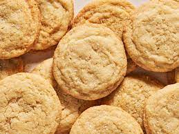

Easy Sugar Cookies

Easy Sugar Cookies
This sugar cookie recipe is quick and easy to make with simple igredients. They are delicious as-is or with candies mixed in. I hope you enjoy this simple recipe that is sure to please all your guest!
Ingredients
- 2 3/4 cups all-purpose flour
- 1 teaspoon baking soda
- 1/2 teaspoon baking powder
- 1 teaspoon vanilla extract
- 1 cup butter, softened
- 1 1/2 cup white sugar
- 1 egg
Steps
- Preheat the oven to 375 degrees F (190 degrees C). Line a baking sheet with a silicone mat.
- Stir flour, baking soda, and baking powder together in a small bowl.
- Beat sugar and butter together in a large bowl with an electric mixer until smooth. Beat in egg and vanilla. Gradually blend in flour mixture. Roll dough into walnut-sized balls and place 2 inches apart onto ungreased baking sheets.
- Bake in the preheated oven until edges are golden, 8 to 10 minutes. Cool on the baking sheets briefly before removing to a wire rack to cool completely.
- Enjoy with a glass of cold milk!